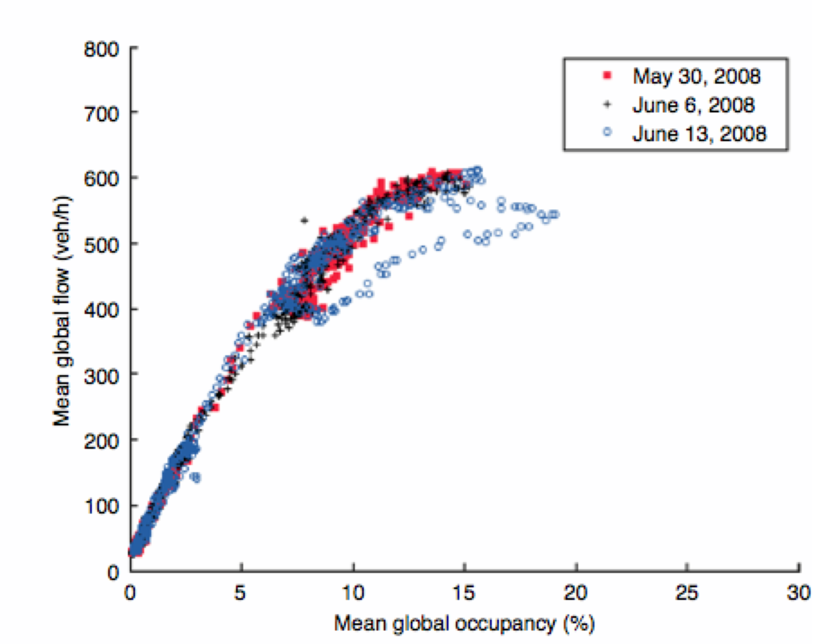
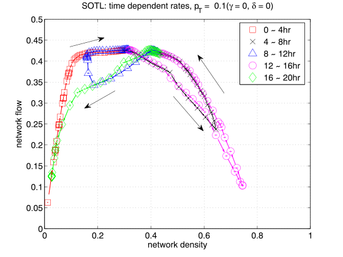

Andrea Bedini
The University of Melbourne / MASCOS / ACEMS
Update rules
Realistic parameters
How do we turn this into a realistic model for traffic?
Dynamical lane changing allowed if it doesn't contradict topological lane changing
A Phase is a set of paths $\mathcal P = \{\color{blue}{P_1}, \ldots, \color{blue}{P_n}\}$
Only paths in current phase can be crossed
Traffic signalling logic chooses the active phase
Equal time to each phase
Adaptive system, responds to real-time data
J de Gier, T M Garoni, O Rojas, J. Stat. Mech. (2011)
Also adaptive, acyclic
| 
Buisson & Ladier 2009 |

Zhang, Garoni, de Gier 2013 |
Theoretical nature
Case studies
Test different design for a specific intersection
Boundary rates are tuned to match the measured throughput of vehicles